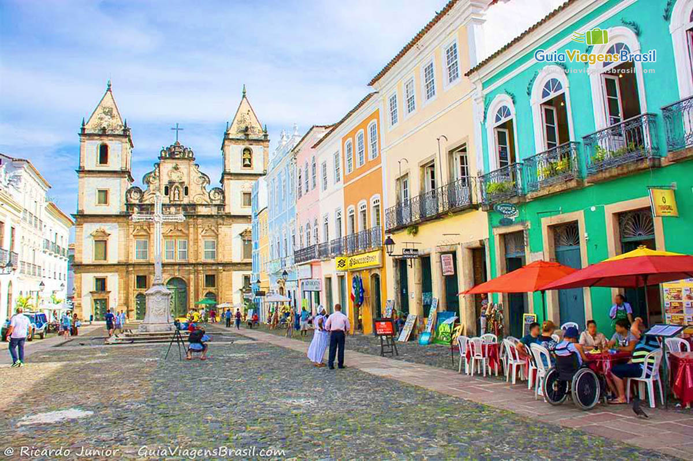
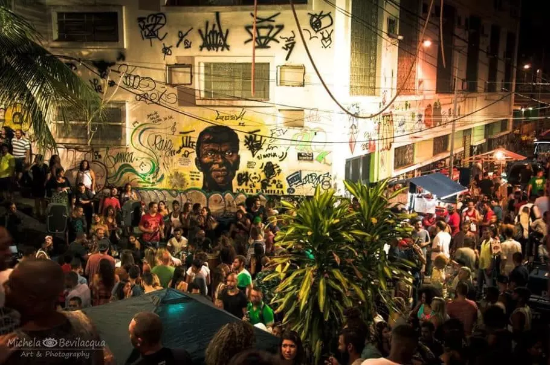
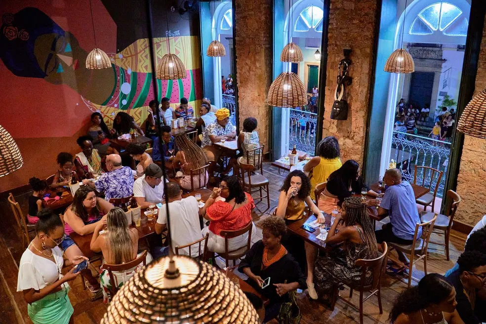
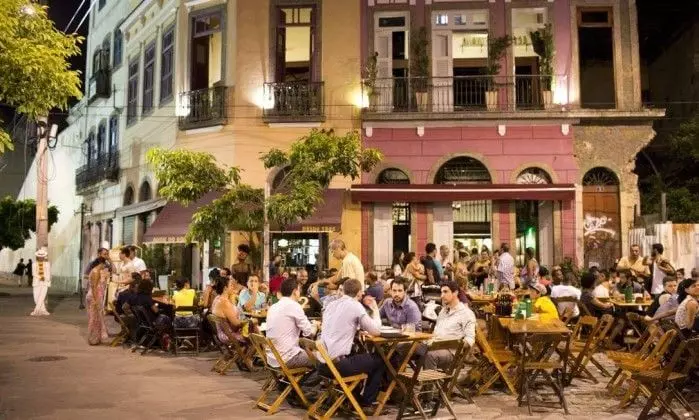
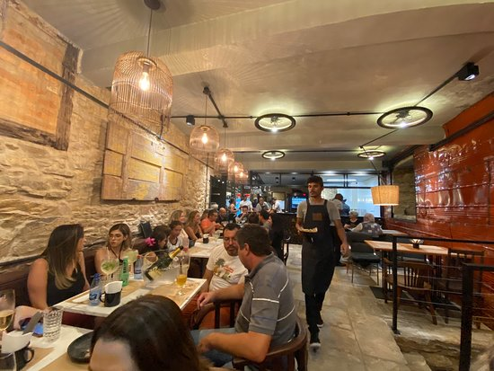

Viagens

Pelourinho (Salvador, BA)
Visitar o "Pelô" em 2026 oferece uma imersão profunda na cultura afro-brasileira através de sua arquitetura colonial barroca, museus, gastronomia e música vibrante.

Pedra do Sal (Rio de Janeiro, RJ)
A Pedra do Sal, localizada no bairro da Saúde, no Rio de Janeiro, é um importante sítio histórico e religioso, considerado o berço do samba carioca.

Ouro Preto (Minas Gerais, MG)
Ouro Preto (MG) é um destino icônico que une história, arquitetura barroca e cultura, sendo Patrimônio Cultural Mundial.
Gastronomia

Pelourinho (Salvador, BA)
A gastronomia no Pelourinho, Salvador, é um mergulho na cultura baiana, destacando-se por moquecas, acarajé e pratos típicos em casarões coloniais.

Pedra do Sal (Rio de Janeiro, RJ)
A gastronomia na Pedra do Sal, no Rio de Janeiro, é marcada pela cultura de rua, oferecendo bares, barracas de comidas e drinks durante as famosas rodas de samba.

Ouro Preto (Minas Gerais, MG)
A gastronomia de Ouro Preto é um dos pilares da cultura mineira, unindo receitas históricas feitas em fogão a lenha com propostas contemporâneas refinadas.